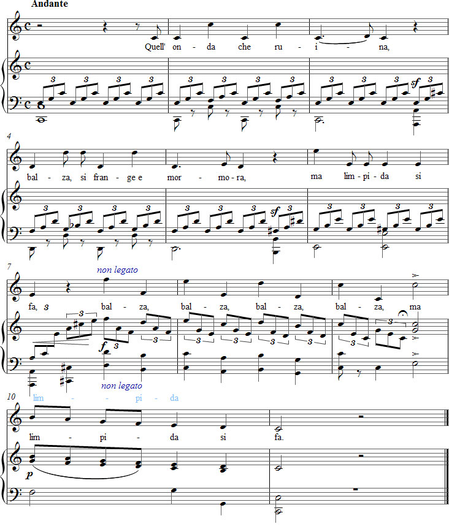

Vaccaj – Harjoitus 4b
Kuuntele äänite
Nuotit

Tehtävä 4b
Intervalli di ottava
Oktaavi-intervalleja
vesi pärskyy, pirstoutuu ja kohisee,
mutta kuitenkin lopulta seestyy.
Esitysohjeet
Tässä tehtävässä harjoitellaan oktaavi-intervallia. Vaccaj on valinnut lauluun dramaattisen tekstin ja samanhenkisen sävelasun tempo allegro.
Tämä tehtävä on ainoa Metodo praticossa, jossa säveltäjä ei ole käyttänyt Metastasion runon kaikkia rivejä. Vaccaj ottaa huomioon seitsentavuisen runon vaihtelevat painotukset antamalla sanalle Quell' nousutahdin mutta ei sanalle balza. Laulun kahdessa ensimmäisessä fraasissa esiintyy aika paljon takapainotuksia. Niitä tukee tekstissä esiintyvä ajatus syöksähtelevästä vedestä, joka motivoi myös oppilaan harjoittelulle välttämättömiä ylös- ja alaspäisiä oktaavihyppyjä. Koska italialaisessa lyriikassa ei suosita peräkkäisiä painotuksia, sana ma, joka esiintyy tahdin 6 ensimmäisellä iskulla, estää sanan limpida ensimmäisen tavun painottamisen.
Koska lopettava asteikko tässä tehtävässä on käänteisesti sama kuin laulukoulun aloittavassa Manca sollecitassa, voidaan olettaa että Vaccaj haluaa näin yhdistää laulut ja samalla sulkea Metodo praticon ensimmäisen osan.
Ohjeita harjoitteluun
Aloita harjoitteleminen laulamalla kaikki oktaavit priimeinä. Jäljelle jää silloin seuraava ”melodia”:
do - do - do - do - do - do - re - do
re - re - re - re - re - re - mi - re
mi - mi - mi - mi - mi - mi
fa - fa - mi - mi - re - re - do - do
do2 - si - la - sol - fa - mi - re - do
Käytä hyväksesi neljän ensimmäisen fraasin tavuja energiseen artikulointiin ja korosta niitä suhteessa lopettavan asteikon äärimmäisen tiiviiseen legatoon.
Laula tekstikin kolmessa ensimmäisessä fraasissa muutetulla melodialla ja ”mässäile” Vaccaj'n painotuksilla.
Quell'onda che ruina,
balza, si frange e mormora,
ma limpida si fa.
Myös oikea melodia pitää laulaa non legato asteikkoon asti. (Tärkeä poikkeus tähän on luonnollisesti tehtävä silloin, jos on olemassa vaara äänihygieenisesti kyseenalaiseen rekisterin vaihtoon naisoppilaalla.)
Periaatteessa on mahdollista täyttää osa 13 oktaavihypyistä kahdeksasosatriolein tersseillä ja kvinteillä. Käytännössä tämä huonontaa kuitenkin sävellystä niin paljon, että oppilaan on parempi laulaa helppo oktaavi-intervalli alusta asti ilman apusäveliä.
Ajatuksia tulkinnasta
Neljässä ensimmäisessä fraasissa laulun ihanteelliseen esittämiseen kuuluu non legato, liikkuva tempo, forte-nyanssi, liioiteltu artikulaatio ja estoton painottaminen.
Pianistin 9. tahdin toisen triolikulun viimeiselle äänelle voidaan lisätä fermaatti, jotta laulaja ehtii hengittää sopivasti huomioiden viimeisen fraasin uuden luonteen.
Laulajan ja pianistin täytyy sopeuttaa 9. tahdin aksentti viimeistä edellisen tahdin piano-nyanssiin.
Muuta
Kokeile laulaa toiseksi viimeisen tahdin tavu -pi- neljännellä kahdeksasosalla.
Forshufvud, G. 1994. Con lieve fiato. Lärarhandledning till Nicola Vaccajs Metodo pratico. Göteborgs universitetet.